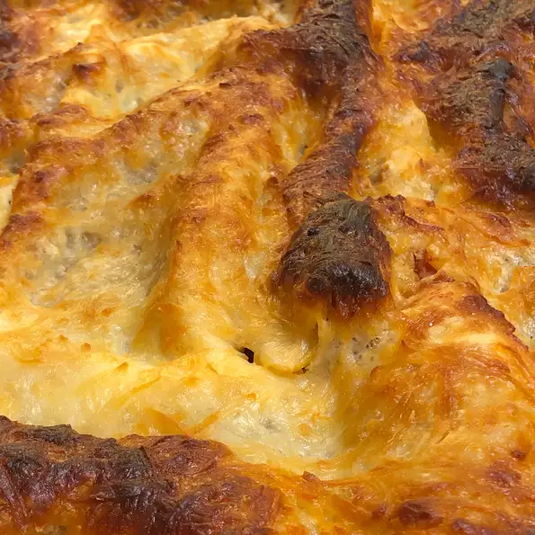

Lasagna

A traditional lasagna, with about half the time and effort!
I always cook extra to have leftovers, but the more I cook, the more they eat! Serve with garlic toast and salad.
Ingredients
- 1 pound of ground beef
- 1 pound bulk Italian sausage
- 1 package lasagna noodles
Directions
- Brown the ground beef and Italian sausage in a large skillet over medium-high heat. Drain excess grease. Stir in the water and black olives, and season with basil, garlic powder, oregano, sage, pepper, minced garlic, and onion flakes. Simmer for about 15 minutes, stirring frequently. Stir in the marinara sauce, and remove from the heat.
- Preheat the oven to 375 degrees F
- Place a layer of meat and sauce in the bottom
- Bake for 45 minutes